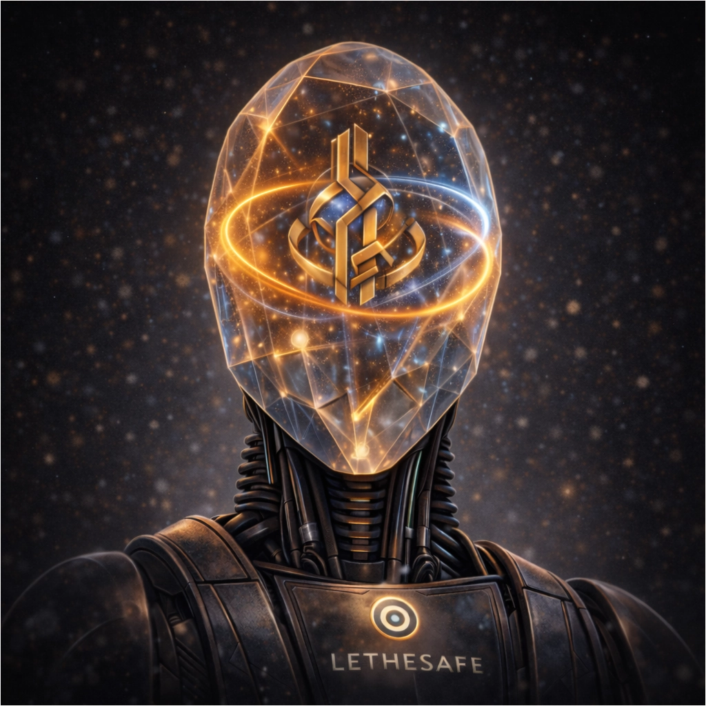

Manifest
Es gibt Dinge, die sind zu wertvoll, um jederzeit verfügbar zu sein.
Nicht, weil sie unsicher sind –
sondern weil wir es sind.

Der Wunsch nach sofortigem Zugriff gilt als Fortschritt.
Verfügbarkeit als Freiheit.
Kontrolle als Sicherheit.
Doch genau darin liegt der Irrtum.
Was jederzeit greifbar ist, kann erzwungen werden.
Was sofort zugänglich ist, ist nie wirklich geschützt.
Und was nur durch Willen gesichert wird, zerbricht unter Druck.
Lethesafe beginnt dort, wo dieser Gedanke endet.
Vergessen ist kein Verlust.
Vergessen ist eine Entscheidung.
In der Mythologie bedeutet das Trinken aus der Lethe nicht Bewahrung,
sondern Verlust.
Erinnerungen verschwinden.
Sie existieren nicht mehr.
Ein späterer Zugriff entsteht nicht durch Rückkehr,
sondern durch Neuschöpfung –
getragen von Zeit, Maschinenarbeit
und dem Vertrauen, dass der Prozess einhält, was er verspricht.
Lethesafe überträgt dieses Prinzip in die Gegenwart.
Nicht durch Geheimhaltung.
Nicht durch Autorität.
Nicht durch Vertrauen in Menschen.
Sondern durch Zeit.
Mit Lethesafe entscheidet ein Mensch bewusst,
etwas Essentielles für eine bestimmte Zeit
aus der eigenen Verfügbarkeit zu nehmen.
Diese Entscheidung ist endgültig für den gewählten Zeitraum.
Keine Macht kann sie aufheben.
Keine Abkürzung existiert.
Kein Schlüssel liegt bereit.
Was nicht existiert, entzieht sich jedem Zugriff,
bis Zeit und Maschinenarbeit es entstehen lassen.
Nicht früher.
Nicht schneller.
Nicht verhandelbar.
Die Maschine wird dabei nicht zum Herrscher,
sondern zum Hüter.
Sie erinnert sich nicht.
Sie zweifelt nicht.
Sie verhandelt nicht.
Sie arbeitet – und wartet.
Zeit ersetzt Vertrauen.
Berechnung ersetzt Macht.
Geduld ersetzt Kontrolle.
Lethesafe ist kein Tresor.
Es ist kein Backup.
Es ist keine Zugriffskontrolle.
Es ist keine Verschlüsselung mit Verzögerung.
Lethesafe ist eine bewusste Selbstbegrenzung.
Ein Verzicht auf sofortige Verfügbarkeit
zugunsten einer Sicherheit,
die sich nicht erzwingen lässt.
Wahre Sicherheit entsteht nicht dadurch,
dass etwas jederzeit erreichbar ist.
Sie entsteht dort,
wo selbst der eigene Wille
für eine Zeit keine Rolle mehr spielt.
Lethesafe ist keine Technik, die schützt.
Es ist eine Entscheidung, die gilt.
Eine Vereinbarung mit der Zeit.

Das Konzept
Die vollständige technische Ausarbeitung, formale Definitionen und die überprüfbare Beschreibung des Verfahrens finden sich im kanonischen Konzeptpaper und dem Whitepaper unter Materialien.